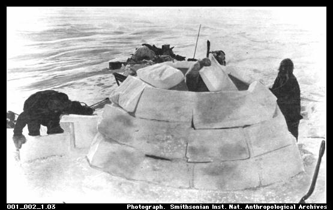

The History of Ice Construction
Even a swift analysis of the history of construction with ice and snow reveals many explorations of the use of phase change in architecture and engineering. The following subjects do not represent the complete list of past and current ice construction techniques and practices, yet they have served as references and lessons for our research and concept development.
Vernacular Architecture
Globally, environments in which sub-zero temperatures are relatively common have always been conducive to the construction of snow and ice structures at varying scales. More specifically, North American snow-dwelling building techniques have instilled a deeply rooted relationship between ice structures and vernacular architecture. The most recognizable is the Inuit igloo - a shelter made of cut blocks of ice or packed snow, stacked in a spiral pattern to form a half-sphere. These architectural structures, however temporary in the short-term, have allowed the Inuit to prosper in an extreme climate for many centuries. Yet, the limits of ice and snow in construction have been explored in a myriad of ways, from fantastical ice palaces, to ice-composite naval air-craft carriers.
 
Left: Igloo in construction. Right: Spiral construction pattern.
Ice Palaces and the Ice Hotel
Historically, ice palaces and hotels are large, breathtaking buildings constructed out of ice and packed snow. In 1740, the first ice palace is said to have been built in Russia as the cruel setting for the wedding night of a newlywed couple who had angered the Empress Anna Ivanovna. Designed by the architect Pyotr Yeropkin, it consisted of huge ice blocks which were frozen together with water and measured 20 meters tall and 50 meters wide. More recent ice palaces have had much less sinister connotations. In second half of the 19th Century, several palaces were built as the centerpieces of popular Scandinavian and North American winter festivals, where they provided the setting for many of the festival's events and generated employmentfor those in need of it.


Ice Palace - Winter Carnival, Montreal 1889.


These architectural marvels glorified North America's winter wonderland and set the foundation for what has become a major tourist attraction. Currently, the ice hotel industry is generating international acclaim and attracts tourists who are interested in novelties and unusual environments. For instance, in Quebec City, Quebec, Canada, a modern version of the ice hotel is erected every January. It is built with an average of 5000 tons of sculpted ice and 15000 tons of snow. The smooth walls of the vaulted rooms are cast snow, approximately 4 feet wide, while immense blocks of sculpted ice serve as furniture.

Ice Hotel, Quebec City 2009.
Visit the ice hotels online:
Hôtel de Glace in Quebec, Canada.
ICEHOTEL in Jukkasjärvi, Sweden.
International Ice and Snow Sculpture Festival - Harbin, China
Since 1963, when the festival was first established, the snow and ice structures being built have become increasingly adventurous and complex. Located in the north-eastern region of China, Harbin's cold climate benefits from the winter winds originating in Siberia. In 2007, the Canadian themed event, in memoriam of Norman Bethune, included a Guinness World Record for the largest snow sculpture which stood at 250 metres long, 9 meters high, and which was built with over 13 000 cubic metres of snow.


International Ice and Snow Sculpture Festival - Harbin, China. Image source


More information and other images of this festival:
Harbin Festival (2004) - Department of Materials Science and Metallurgy, University of Cambridge
Harbin Festival (2007) - Images by photographer R. Todd King
Project Habakkuk
While ice seems like a natural construction material for a northern climate, the military has adapted ice for several other uses as well. One such application is the use of packed snow and ice as a paving material for roads in the far north, where traditional road materials would be inappropriate and expensive. Another particularly unique experiment was Project Habakkuk, proposed by the British navy in 1942. At this point, the UK had been stripped of ship-building materials and as a last resort, the government turned to experimentation with ice because of its inherent buoyancy. Thus, the plans for a naval vessel the size of an aircraft carrier were developed and even partially built using a material called pykrete, a mixture of frozen water and woodpulp. Finally, due to problems with long-term durability, the enormous production resources needed, and the conclusion of the war, the project never set sail, yet to this day it remains a fascinating study of ice-based structures and construction techniques applicable to civil and military milieus alike.

Project Habakkuk proposal (1942).
Harnessing the phase change properties of ice
More recently, new advantages of employing ice, not as a building material, but for its phase transition abilities are surfacing and generating major interest throughout the globe. For instance, it has been suggested that bulk freezing may provide a way to store water in the form of ice in winter and use the melted water in summer for irrigation in dry areas around the world. Another fascinating by-product of this process will be the free cooling potential in summer from the phase-change energy released.
The use of ice and snow as building materials for traditional construction techniques has been extensively researched and tested. At McGill, we are developing automated, robot-assisted techniques for harnessing the properties of water-to-ice phase change. We have concentrated on additive processes like rapid prototyping, partly because subtractive methods like CNC are already well-developed. Additionally, using RP, we will be able to build certain parts that cannot be built using CNC.
Next: Current team members